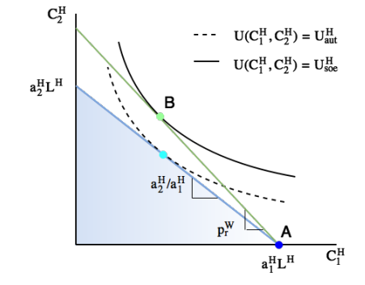
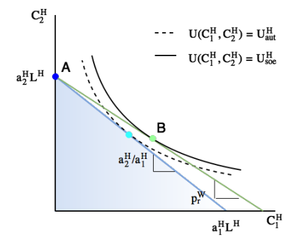

ECON2252 Lecture 3 (2)
Small Open Economy
现在，我们假设 Home 可以以世界市场价格 $p_1^W,p_2^W$ 交易，假设与上节基本相同。
在生产方面，我们假设 Home 同时生产商品 1 和 2 （我们在接下来的讨论中会看到这是不可能的）。
回顾前文所提的零利润条件
因此，世界相对价格 $p_r^W \equiv p_1^W/p_2^W$ 必须满足
我们看到，世界相对价格与自给自足下的 Home 相对价格是完全相等的。
我们回忆上节的内容，在 SOE 下，只有当世界相对价格与自给自足相对价格不同时，贸易才可能发生。所以，在上述我们设置的情景中（Home 同时生产商品 1 和 2），Home 无法从贸易中获得任何利益。
那么，在李嘉图模型中，贸易究竟是如何产生的呢？
这里的关键在于，随着贸易开放，所有工人都可能在一个部门就业。也即是说，实现完全专业化变得可能，一国对另一种商品的需求完全可以通过进口外国产品来满足。
因此，我们考虑两种情况：
- Home 专门生产商品 1 ；
- Home 专门生产商品 2 。
Case 1: Home specializes in good 1
在这种情况下，Home 的所有企业都生产商品 1 ，没有企业生产商品 2 .
因为有企业在行业 1 中生产，所以根据零利润条件有
又因为没有企业在行业 2 中生产，说明行业 2 的利润不足以让企业支付其生产成本
由此，世界相对价格必须满足
这表明 $p_r^W>p_r^H$ ，即世界相对价格大于自给自足相对价格，所以 Home 在商品 1 上有比较优势。下图是示意图：

其中 Home 在 A 点处生产，而贸易允许其在 B 点处消费，由此达到了更高的效用。此时 Home 出口商品 1 ，进口商品 2 .
那么此时贸易是如何影响 Home 的实际工资的呢？
我们回忆利润条件为
可以重新化成
我们看到，商品 1 的实际工资没有变化，但商品 2 的实际工资提高了，这意味着 Home 中劳动者在商品 2 上的购买力增强了，相比封闭经济下，Home 的劳动者现在可以用相同的收入购买更多的商品 2 ，即从贸易中获益。
Case 2: Home specializes in good 2
在这种情况下，Home 的所有企业都生产商品 2 ，没有企业生产商品 1 .
因为有企业在行业 2 中生产，所以根据零利润条件有
又因为没有企业在行业 1 中生产，说明行业 1 的利润不足以让企业支付其生产成本
由此，世界相对价格必须满足
这表明 $p_r^W<p_r^H$ ，即世界相对价格小于自给自足相对价格，所以 Home 在商品 2 上有比较优势。下图是示意图：

其中 Home 在 A 点处生产，而贸易允许其在 B 点处消费，由此达到了更高的效用。此时 Home 出口商品 2 ，进口商品 1 .
那么此时贸易是如何影响 Home 的实际工资的呢？
我们回忆利润条件为
可以重新化成
我们看到，商品 2 的实际工资没有变化，但商品 1 的实际工资提高了。高的实际工资意味着更高的效用，即从贸易中获益。
Summary
如果 $p_r^W>p_r^H$ ：
- Home 在商品 1 上有比较优势；
- Home 生产并出口商品 1 ；
- Home 不生产商品 2 但它可以从世界市场中进口商品 2 ；
- Home 中的家庭效用比自给自足时更高。
如果 $p_r^W<p_r^H$ ：
- Home 在商品 2 上有比较优势；
- Home 生产并出口商品 2 ；
- Home 不生产商品 1 但它可以从世界市场中进口商品 1 ；
- Home 中的家庭效用比自给自足时更高。
在以上两种情况中，实际工资和效用的提升很好理解：贸易允许专业化分工，国家可以生产它们拥有比较优势的产品。
然而，在上述模型中，贸易对就业的影响非常显著：在自给自足下，工人在两个部门都有就业；而在完全专业化的贸易下，所有工人都被一个部门“解雇”，但会立即被另一个部门重新雇用。
在之后的学习中，我们将介绍特定因素模型，看到要素流动性是决定谁从贸易中获益的关键因素。